人生路上，没有永远的成功，也没有永远的失败，只有不断地奋斗。
我是姑妈的海外生活，上海人，现居加拿大多伦多。
四十岁前，我顺风顺水，是朋友和家人眼中的成功女性，生活的幸运儿；四十五岁后，我却陷入事业与婚姻的双重危机。
走过迷茫，我更坚定了自己的人生理念：无论顺境逆境，光鲜与暗淡，勇敢面对自己的选择，为梦想而努力，才能活出人生的精彩。
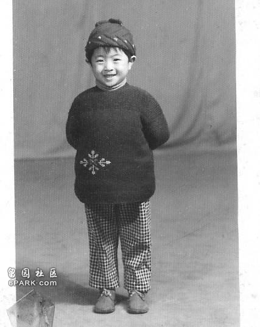
（小时候的我）上个世纪 70 年代，我出生在上海一个典型的知识分子家庭。父母都是六十年代初的大学毕业生，毕业后被分配到上海工作。
我从小爱好文艺，能歌善舞。从幼儿园到大学，我都是班里的文艺积极分子，经常参加各种文艺演出。对文艺的热爱，深深影响了我后来的学业和生活。
高考时，我考上了华东师范大学英美文学系。毕业后，国家紧缺外语人才，大部分毕业生被分配到院校做外语老师。
为了避免毕业生跳槽到外企，很多高校规定，至少签五年合同。
在众多院校中，我选择了一所离家较近，又没有“五年”限制的专科院校。
那是一段很愉快的日子，我和学生年龄相仿，很快打成了一片。学校的工作不需要坐班，也没有多少压力。
虽然工资不高，但很稳定。如果我愿意，可以捧着铁饭碗一直干到退休。
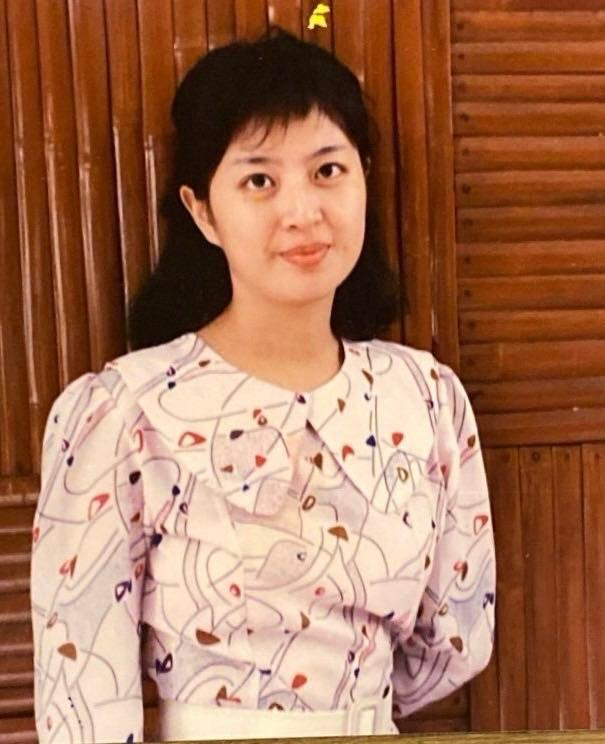
（大学期间的我）但这种轻松愉快地工作仅仅持续不到一年，我就辞职了。
当时正值改革开放，对世界充满好奇的我，并不甘于这一眼望到头的生活。我不想几十年如一日地在象牙塔里生活。外面的世界很精彩，我要去闯一闯。
自从离开学校那一刻起，我的命运发生了巨大的变化。
我先去应聘了一家著名的美国电话公司，本来抱着“聊一聊”的心态，没想到在几千个面试者被公司选中，成为公司的客服代表。
国际大公司开阔了我的眼界和能力。在那里，我每天和来自世界各地的客户打交道，让我快速成长。而我的薪水也比原先增长了几倍。
一晃快两年时间过去了，我突然产生了强烈的危机感。
这是一家技术型公司，而我从事的只是服务性工作。尽管我英语很好，但英语好的年轻人越来越多，我的工作很容易被取代。
心里有个声音告诉我：“是时候离开了。”
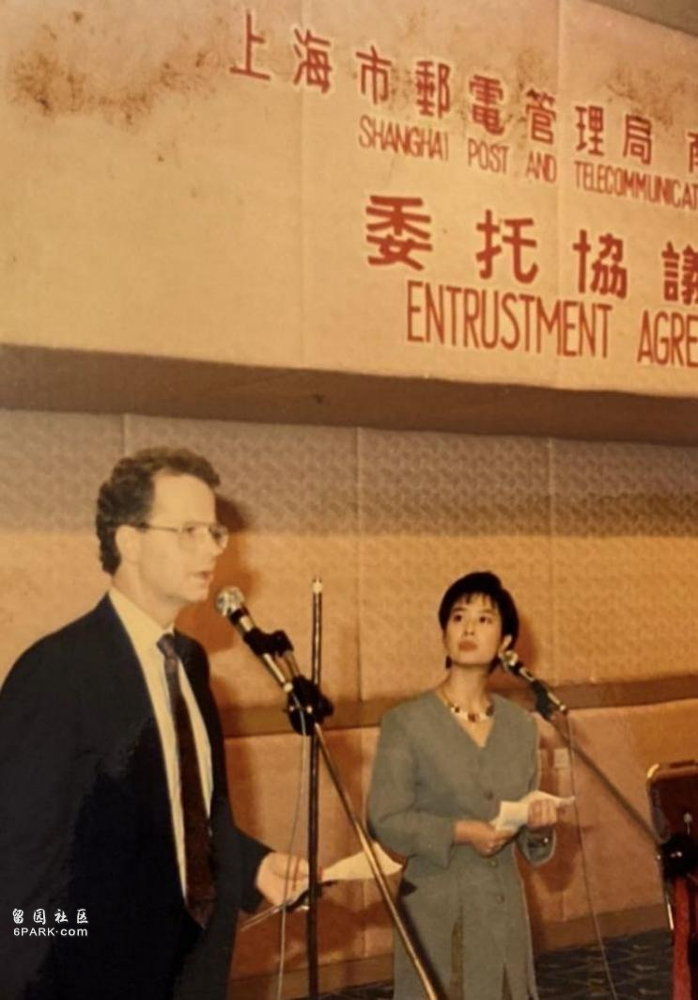
（在美国南贝尔电话公司工作期间）当时，我们办公的地方还有很多外企，业务上互有往来，有位北欧的小伙子让我印象很深。
他金发碧眼，高大帅气，在和公司签合同时，我们闲聊了起来。
他是欧洲一家服装公司的CEO，打算在上海开办事处。我一听，很感兴趣，试探性地问他：“你们公司还招人吗？”
没想到，他很爽快地回复：“好啊，你把简历发给我。”
巧合地是，我一位同事的老公也在这家服装公司工作，也帮我推荐了一下。
经过两轮面试，我成功跳槽到这家世界五百强的欧洲服装公司，就是后来大家都很熟悉的H&M公司。
办公地从南京路搬到淮海路，拿着高薪，出入高档办公楼，二十四五岁的我，俨然是个幸运儿。初入服装行业，一切都很新奇。我英语很好，对时尚艺术潮流也很敏感，所以半年后，我就开始学习服装外贸的订单业务了。
当时上海办事处成立不久，业务发展很快，这给了我很大的成长空间。随着对行业越来越了解，我渐渐意识到，服装行业并非表面上光鲜亮丽，背后的付出是异常辛苦的。
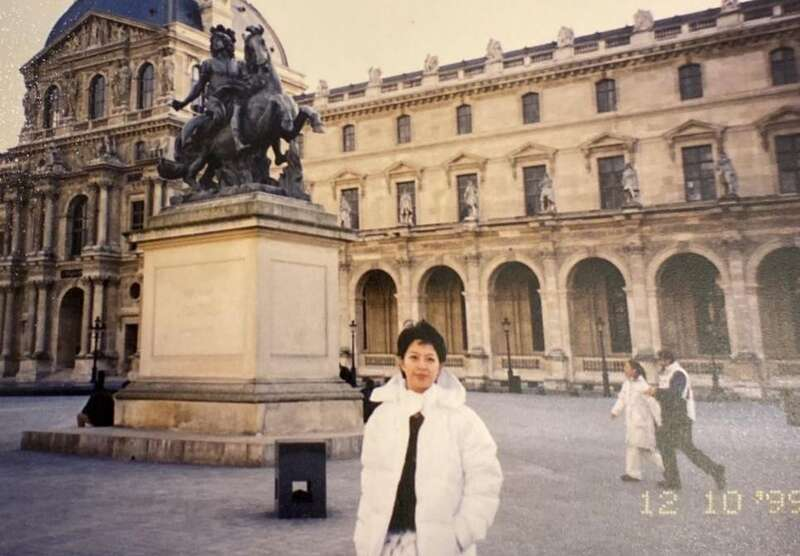
（1999 年，第一次去巴黎）特别是做外贸业务，需要和上下游的买家和卖家进行良好地沟通，要随时应对各种突发状况，甚至是天灾人祸。我们还要去工厂监督生产质量，解决发生的问题。
挑战和压力都很大，然而这些我都不怕，最怕公司内部的关系斗争。
我是个埋头努力做事情的人。但有人的地方就有江湖，我还是不可避免地被卷入了权斗风波之中。
女装部是公司最大、最赚钱的部门。当时，一位女装部的同事要离开，我很想进入这个部门。
但那位同事为了保住自己的“关系”，并不愿意让我来接替他的位置。
于是，他去老板那里讲了我许多坏话，老板没经过调查就把我调去了一个我不太喜欢的部门。
这场风波之后，我心情低落。当时我在行业里已经有了一定的能力，加上年轻气盛，岂能咽下这口气？
我很快就通过猎头公司找到了另一家更有发展潜力的欧洲服装公司。
这家公司初入上海，连办公室都没有，我成了上海公司的初创者之一，并且进入了自己最向往的业务领域——女装行业。
从那之后的八九年，是我事业迅速成长的时期。
我像一只旋转的陀螺，一刻不停：参加欧洲谈判会，各种展会，了解服装潮流趋势，对接国外市场需求，在国内联系外贸公司，找加工工厂，联系和发展国内外的订单接单，生产和监督等业务……
经过几年的发展，总公司在全世界开出了上千家店铺，单单上海办事处每年的出口业务额就是上亿元。身在其中，我一边品尝成功的喜悦，一边承受激烈的竞争压力，痛并快乐着。
比起那些捧着铁饭碗的同学们，我的工作更具有挑战性和建设性，收入也要高出几倍。三十多岁，我的足迹已经遍布国内外多个城市。眼界大开，这让我很有成就感。
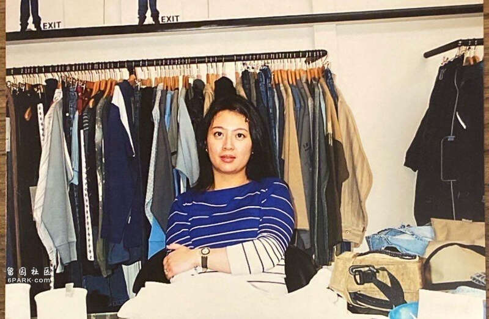
（在欧洲服装公司工作期间）千禧年，我结婚了，买了新房，很快又有了孩子。工作虽然依旧繁忙，但有我父母帮着照顾孩子，家庭、事业都算是顺风顺水。
但是人生不会总是一帆风顺。
2005 年，公司发生了一次重大的变化。公司经理卷入了一些不光彩的事情被迫辞职，而我是很有可能接替他位置的人。
但他临走时不希望我破坏他经营多年的关系，所以向管理层的老板们打了我的小报告。多年后，我再次遇到类似的问题。
大老板找到我，说员工反映我工作态度上有问题，要把我调到一个新部门，实际上是在架空我。
我当时不明就里，但这样的“阴招”让我非常愤怒。我的业务能力有目共睹，和员工关系也不错，不明白公司高层为什么会轻信某些人的诽谤。但当时我并不知道是谁在背后陷害我，更无法为自己辩护。
那年，我三十六岁，十几年的职场历练，让我积累了很多工作经验，但对于职场斗争丝毫没有应对办法。
我当时的第一反应就是：不用你们来炒我，我先炒了你们！
尽管高层领导中有人要挽留我，但我还是和公司结清了所有费用，毅然离开工作了将近十年的公司。
（厌倦了职场斗争，我毅然离职）
一时间，没有了工作压力和勾心斗角，我很自由但很迷茫。
尽管猎头公司给我推荐了不少大公司的高薪职位，可两次职场背刺的经历，让我突然心生厌倦。
恰好，一个开公司的朋友打算开拓海外业务。我的外贸经验，外语能力正是他的公司需要的。
他向我伸出了橄榄枝，邀请我同他一起创业。
我们一拍即合，他是总经理，负责管理合作工厂的生产，我是副总经理，负责接洽订单并跟踪生产环节的进程和客户沟通。
就这样，我和朋友开始了自主创业，工作时间相对自由，能抽出时间照顾年幼的女儿。
虽说钱赚得不如在外资公司多，但自己做，很踏实，也很安心。就这样做了好几年，一切都很顺利，心情也很愉快。
我的合作伙伴在贸易这一行打拼了很多年，最大的愿望就是有一个属于自己的工厂，不用再看合作工厂的脸色行事。
刚巧有个认识的上海老板在卖工厂，说是要转型做房地产开发。双方一谈，价格也合适。
老板承诺原来厂子里的客户订单都交给我们继续做，合作伙伴动心了。但我深知做工厂要耗费太多的精力和时间，我们公司的人手不够，搞不好会得不偿失。
我极力劝阻，但他为了实现自己的梦想，坚决要把厂子买下来，并且很快付了一半的费用。
等到工厂接收过来，我们才发现，那个老板撒了谎，我们被骗了。
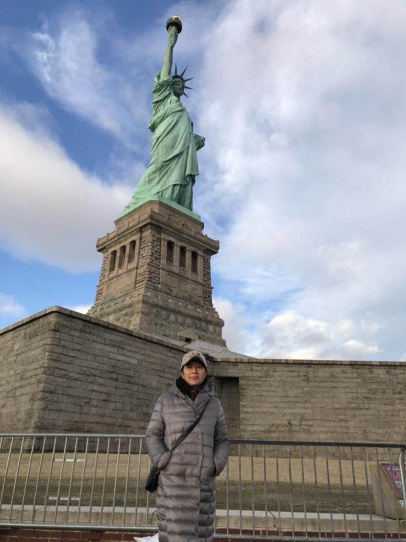
（去世界各地旅行）他卖厂子根本不是转型做房地产，而是为了还债。之前承诺的订单也是子虚乌有，那些订单早就因为工厂的质量管理问题被取消了。
可这些情况我们一直被蒙在鼓里。
搭档当初买厂心切，没有仔细去做各方调查，等到债主们纷纷上门要账，我们才发现了问题的严重性。
工厂没法按计划正常开工，每天固定开销就几万块，买下这家工厂其实是买了一颗定时ZA弹。
更要命的是，搭档是以个人名义签的合同，无法避开那些债务，因为法定代表人已经更改，打官司也必输无疑。
果然，官司打了一年多，以败诉结局，工厂只能被迫停产，而我手上一些老客户的订单，只能拿出去给别的厂子加工。
败诉之后，工厂开始了资产清算，工人们解散了。干了这么多年，我突然变成了一个完全靠自己打拼的个体户。
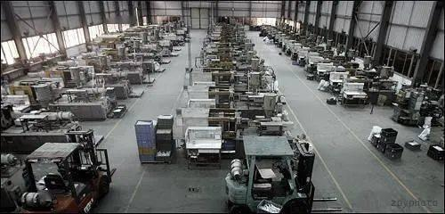
（工厂倒闭了）那段时间事业翻船，焦头烂额，但我并没有被打倒。
虽说人到中年，但我还不老，还有女儿，我不能就此躺平，我必须做下去。
即使是独自一人应对客户、工厂和生产中出现的各种问题，我也要坚持做下去。
我是一个习惯了工作的人，是在工作中享受成就感的人，如果无所事事游手好闲，那会是我生命中无法承受的事。
但屋漏偏逢连夜雨，就在事业出现危机的同时我的婚姻也亮起了红灯。
我丈夫原本在一家国营媒体从事艺术方面的工作，工作体面，收入稳定。但赶上改制，部门被裁撤，变成了自负盈亏的公司。
虽然基础工资照发，但人就无所事事了。在国营单位呆了这么多年，都是单位安排任务，一下子变成要出去找项目赚钱，他很不适应。
刚开始的时候，他还主动找过一些工作项目，但没有成果，几次之后，他就懒得再去找了。
当年单位里给他分了一套小房子做婚房，很多亲戚朋友都羡慕我们。本来这是件好事，但因为我们后来买了婚房，他拿着这套房子的租金，还有工资，衣食无忧，也失去了奋斗的动力。
有些人可能觉得不上班还有钱拿是件很幸福的事，可在我看来，这种无所事事的状态就是在浪费生命。
我承认婚前对他了解得不深，当初看他有一技之长，人也本分老实，工作单位好，又有分房福利，在双方都适婚的年龄遇到彼此，恋爱不久就领了结婚证。
（渐行渐远的两个人）
然而，随着时间的推移，我们的价值观分歧越来越大，家庭氛围变得非常紧张。
我很担心这样的家庭环境对孩子的成长非常不利。与其这样，不如离婚吧。各自过喜欢的生活又不会让对方难堪，对彼此都是好事。
但他却坚决不同意。因为离婚意味着要打破他的舒适区，他的工作已经不行了，婚姻再破裂，他接受不了这双重打击。
冷战的日子持续了好几年，一直到女儿即将上高中。我想，为了女儿和我自己都必须要有所改变了。
当时，我妹妹和父母已经移民加拿大好多年了，我决定让女儿去国外读书。
我卖掉了一套办公房作为女儿的学费和生活费，让女儿去了加拿大读高中，并由我父母照顾。
我和丈夫依然留在上海，我继续做我的外贸工作，他呢，大多数时间搞他自己的艺术，彼此的交流越来越少。
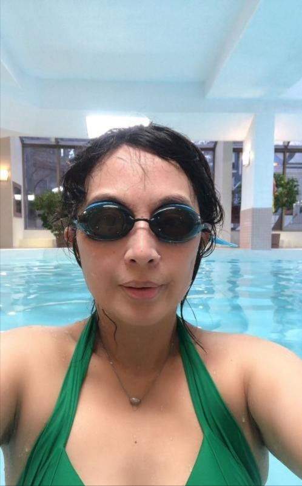
（每周坚持游泳）有一段时间，他接了一个活，在外面出差。那段时间，我就想了很多：我觉得不能这样一辈子混下去。
在我看来，婚姻就是一场双向奔赴，需要夫妻两个人共同成长，彼此成就。
我不要求你赚大钱，但夫妻在价值观上必须是同频的，面对生活的挑战，需要同心同德一起应对。
身边很多朋友劝我：“都这个年纪了，不要折腾了，你丈夫不是个坏人，等你老了，身边还是要有个伴儿的。”
但我不这么想，我觉得每个人都需要为自己的人生负责，要积极、乐观、充满希望。这样的生活才有意义，勉强凑合不是我想要的。
在他回上海之前，我收拾好自己的东西，给他留了一张字条，离家出走了。
我对他说：“我们还是好离好散吧，我能理解你的痛苦，我也很痛苦，再这么纠缠下去只是互相折磨。”
最终，我们协议离婚，把名下的房子处理掉，分配了财产。
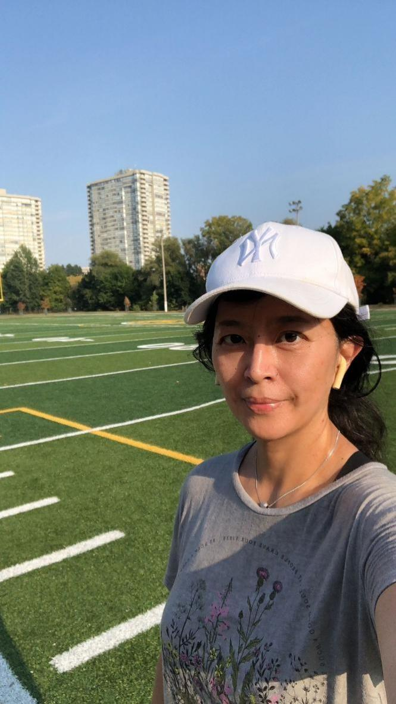
（在操场锻炼）我不再想和他计较什么了，我还有很多事情要做，我有能力养活自己和孩子，我不想要一段名存实亡的婚姻。
在那段灰暗的日子里，我也曾伤心和痛苦，但并没有因此而一蹶不振。
面对新的一天，我努力地坚持工作和学习。工作不多的时候，我去参加了对外汉语培训班，利用业余时间做兼职老师，同时阅读名人传记激励自己，不断地充实生活。
人生无常，不能指望生活永远顺风顺水。人生如逆水行舟，不进则退。逆境正是对个人的考验，更是磨炼意志的机会。
2020 年春节，我像往年一样前往加拿大探亲。本来计划春节过后就返回上海继续工作。没想到，一场席卷全球的疫情让归程遥遥无期，航班停飞了，我的外贸业务也被迫停止了。
原以为几个月疫情就会过去，可情况却变得越来越糟糕。
签证一再延期，一切都出乎预料，我在加拿大一住就是四年。
谁都没想过生活会出现如此巨大的变化，工作停滞了，身在异国他乡，我能做些什么给生活赋予积极的意义？
我是个闲不住的人，我开始在网上做英语培训师，做对外汉语老师。我继续读书学习，做各种投资理财，拿起笔写作，坚持健身、练琴…….
生活被这些事情填满了，我不是富豪，也没有固定的工作，但我的生活很充实。
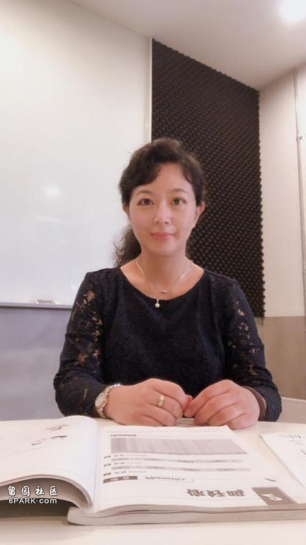
（兼职做对外汉语教师）我的大学专业是英美文学，离开校园几十年，生活给了我丰富的经历，生活也磨炼了我，让我的思想日趋成熟。
现在，我不再需要为外贸业务而奔波了，可以用笔将过往发生的事情和感悟记录下来。
我把一些随笔发表在网络平台上，没想到加拿大女作协的会员联系了我，希望我可以加入到协会中去。
这几年里，我陆陆续续地写了一些散文、杂文、小说等，前后共计几十万字。
之所以选择写作，一部分原因是我想保留阅读的习惯和独立思考的能力。目前，我正在创作一本关于疫情期间海外生活的小说，预计 20 万字左右。
因为对时尚艺术一贯的兴趣和热情，我还爱上了收藏中古家居用品。加拿大有许多主营中古产品的二手店，我成了各种二手店的常客。
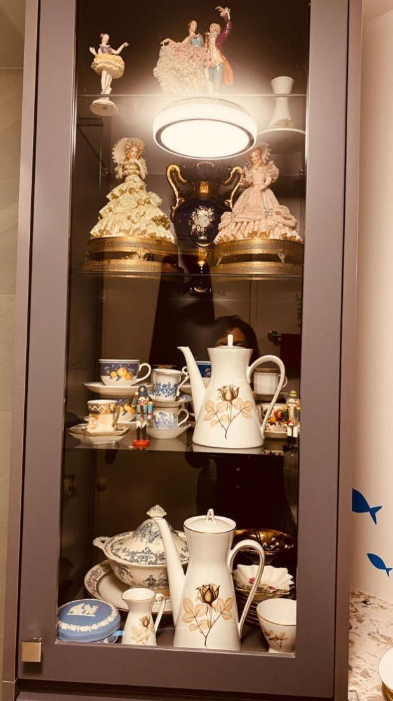
（精美的欧洲中古瓷器）业余爱好丰富了我在异国他乡的生活，同时又得到美的享受。
小时候，父母就教育我，每个人都要要靠自己努力去主宰自己的生活，不要幻想从别人那里贪图什么。
这些年，我攀过高峰，纵览风光，也滑落低谷，饱尝痛楚，才知父母当年教诲如此恳切。
我在大学读的是文学专业，兜兜转转我又回到了这里。
如今，我已接近退休的年龄，但我不想吃喝玩乐地度过余生。我已走过了半个世纪，得益于多年健身的习惯，我依然健康，有一颗年轻的心。同年轻的时候相比，各种经历让我变得更加成熟和睿智。
尼采说：“要真正体验生命，你必须站在生命之上。”
生命的真义，就是不停地突破自我，赋予自己生命存在的价值和意义。
有人问我，你打算什么时候退休？
我想说，只要做得动，我永远都不会退休，而是去做各种自己喜欢做的事情，从中获得成就感，过属于自己的理想人生。